B17 / K=1 · 2026.11.14
싱글 스펙트럼 복원 결과
이미지와 Known / Unknown 조건을 선택하면 수치와 실제 복원 그림을 확인할 수 있습니다.
01 · 이미지별 복원 결과
| 대상 이미지 | 추천 알고리즘 | Known 파장별 결과 | 최신 Known 결과 | Unknown 파장 추정 · 복원 결과 |
|---|---|---|---|---|
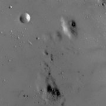 일반영상Known 성공 | Adaptive Pyramid 후보 | 440 nm0.0154 rad · 0.530% 550 nm0.0266 rad · 0.725% 660 nm0.0409 rad · 0.395% 축소 Known 10/10 통과 | 통과 0.040756 rad 0.394% · Adaptive v2 / Zero | 연속 보정 · 중간 537.3 → 537.294022 nm Δλ 0.005978 nm · RMSE 0.1086Sensor 8.266% (미달) 과거 축소 Blind 4/4 파장 일치 |
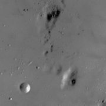 일반영상Known 미확인 | Adaptive Pyramid 후보 | Known 수치 미확인 | 최신 Adaptive 별도 미확인 | Unknown 성공 530 → 530 nm GD200 RMSE 0.027372 · L2 0.672%별도 전체 격자 검증 센서 · 이전 GD10 이력 보존 |
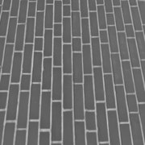 일반영상Known 성공 | Adaptive Pyramid 후보 | 440 nm0.0138 rad · 0.639% 550 nm0.0237 rad · 0.771% 560 nm0.0308 rad · —% 660 nm0.0432 rad · 0.645% 축소 Known 10/10 통과 | 최신 Adaptive 별도 미확인 | 과거 파장 일치 560 → 560 nm GD10 RMSE 0.2060 · L2 13.60%위상/센서 미달 |
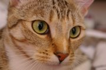 일반영상Known 성공 | Adaptive Pyramid 후보 | 440 nm0.0120 rad · 0.594% 550 nm0.0211 rad · 0.760% 660 nm0.0446 rad · 0.596% | 최신 Adaptive 별도 미확인 | 전체 격자 Blind 기록 미확인 |
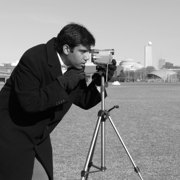 일반영상Known 성공 | Adaptive Pyramid 후보 | 440 nm0.0554 rad · 1.114% 660 nm0.1427 rad · 1.188% 축소 Known 0/10 통과 | 최신 Adaptive 별도 미확인 | 전체 격자 Blind 기록 미확인 과거 축소 Blind 6/6 파장 일치 |
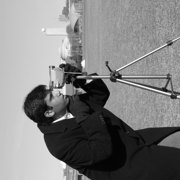 일반영상Known 성공 | Adaptive Pyramid 후보 | 440 nm0.0556 rad · 1.119% 550 nm0.0903 rad · 1.243% 660 nm0.1421 rad · 1.423% | 최신 Adaptive 별도 미확인 | 전체 격자 Blind 기록 미확인 |
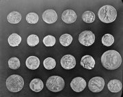 일반영상Known 성공 | Adaptive Pyramid 후보 | 440 nm0.0152 rad · 0.755% 660 nm0.0661 rad · 0.900% 축소 Known 0/10 통과 | 최신 Adaptive 별도 미확인 | Unknown 성공 590 → 590 nm GD200 RMSE 0.046952 · L2 0.924%별도 전체 격자 검증 센서 · 이전 GD10 이력 보존 |
일반영상Known 성공 | Adaptive Pyramid 후보 | 660 nm0.1192 rad · 1.002% | 최신 Adaptive 별도 미확인 | 전체 격자 Blind 기록 미확인 |
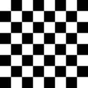 일반영상Known 미확인 | Adaptive Pyramid 후보 | Known 수치 미확인 | 최신 Adaptive 별도 미확인 | Unknown 성공 450 → 450 nm GD200 RMSE 0.006994 · L2 0.525%별도 전체 격자 검증 센서 · 이전 GD10 이력 보존 |
일반영상Known 통과 | Adaptive Pyramid 후보 | Known 수치 미확인 550 nm0.052426 rad · 0.981% Pyramid64 GD150 + L-BFGS150 · 통과 | 550 nm0.052426 rad · 0.981% Pyramid64 GD150 + L-BFGS150 · 통과 | 전체 격자 Blind 기록 미확인 |
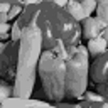 일반영상Known 통과 | Adaptive Pyramid 후보 | Known 수치 미확인 550 nm0.070480 rad · 0.854% Pyramid64 GD150 + L-BFGS150 · 통과 | 550 nm0.070480 rad · 0.854% Pyramid64 GD150 + L-BFGS150 · 통과 | 전체 격자 Blind 기록 미확인 |
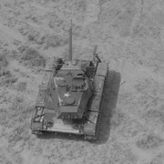 일반영상Known 조건 충족·조기 수렴 | Adaptive Pyramid 후보 | 532 nm0.017914 rad · 구 GS 256² / 0~π / 무잡음. B17과 구분.550 nm0.074268 rad · 0.978% Pyramid64 GD150 + L-BFGS73 · 조건 충족·조기 수렴 | 550 nm0.074268 rad · 0.978% Pyramid64 GD150 + L-BFGS73 · 조건 충족·조기 수렴 | 전체 격자 Blind 기록 미확인 |
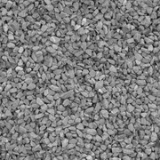 일반영상Known 조건 충족·조기 수렴 | Adaptive Pyramid 후보 | 470 nm0.0990 rad · —% 축소 Known 10/10 통과 470 nm0.051839 rad · 1.211% Pyramid64 GD150 + L-BFGS87 · 조건 충족·조기 수렴 | 470 nm0.051839 rad · 1.211% Pyramid64 GD150 + L-BFGS87 · 조건 충족·조기 수렴 | 과거 파장 일치 470 → 470 nm GD10 RMSE 0.6037 · L2 35.29%위상/센서 미달 과거 축소 Blind 4/4 파장 일치 |
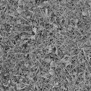 일반영상Known 통과 | Adaptive Pyramid 후보 | 500 nm0.1602 rad · 2.373% 축소 Known 10/10 통과 500 nm0.128174 rad · 1.857% Pyramid64 GD150 + L-BFGS150 · 통과 | 500 nm0.128174 rad · 1.857% Pyramid64 GD150 + L-BFGS150 · 통과 | 과거 파장 일치 500 → 500 nm GD10 RMSE 0.5927 · L2 33.01%위상/센서 미달 |
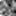 일반영상Known 미확인 | Adaptive Pyramid 후보 | Known 수치 미확인 | 최신 Adaptive 별도 미확인 | 전체 격자 Blind 기록 미확인 과거 축소 Blind 4/4 파장 일치 |
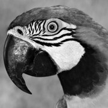 일반영상Known 성공 | Adaptive Pyramid 후보 | 660 nm0.0283 rad · 0.616% | 통과 0.028343 rad 0.616% · Adaptive 정책 / LS2D | Coarse 오파장 660 → 650 nm Δλ 10 nm · 최종 위상 미검증 |
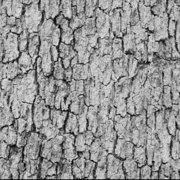 일반영상Known 미달 | Adaptive Pyramid 후보 | 660 nm0.1582 rad · 1.566% 660 nm0.158244 rad · 1.566% Pyramid64 GD150 + L-BFGS150 · 미달 | 660 nm0.158244 rad · 1.566% Pyramid64 GD150 + L-BFGS150 · 미달 | Coarse 일치 660 → 660 nm Δλ 0 nm · 최종 위상 미검증 |
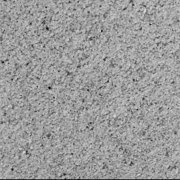 일반영상Known 미달 | Adaptive Pyramid 후보 | 660 nm0.1598 rad · 1.649% 660 nm0.159781 rad · 1.649% Pyramid64 GD150 + L-BFGS150 · 미달 | 660 nm0.159781 rad · 1.649% Pyramid64 GD150 + L-BFGS150 · 미달 | Coarse 일치 660 → 660 nm Δλ 0 nm · 최종 위상 미검증 |
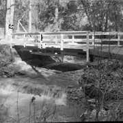 일반영상Known 미달 | Adaptive Pyramid 후보 | 660 nm0.1890 rad · 1.737% 660 nm0.619340 rad · 12.521% Full GD100 + Spectral Periodic L-BFGS100 · 미달 | 660 nm0.619340 rad · 12.521% Full GD100 + Spectral Periodic L-BFGS100 · 미달 | Coarse 일치 660 → 660 nm Δλ 0 nm · 최종 위상 미검증 |
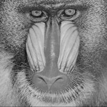 일반영상Known 미달 | Adaptive Pyramid 후보 | 660 nm0.2755 rad · 2.362% 660 nm0.281223 rad · 2.372% Full GD100 + Spectral Periodic L-BFGS100 · 미달 | 660 nm0.281223 rad · 2.372% Full GD100 + Spectral Periodic L-BFGS100 · 미달 | Coarse 일치 660 → 660 nm Δλ 0 nm · 최종 위상 미검증 |
일반영상Known 미달 | Adaptive Pyramid 후보 | 660 nm0.2955 rad · 1.862% 660 nm0.322519 rad · 1.915% Full GD100 + Spectral Periodic L-BFGS100 · 미달 | 660 nm0.322519 rad · 1.915% Full GD100 + Spectral Periodic L-BFGS100 · 미달 | Coarse 일치 660 → 660 nm Δλ 0 nm · 최종 위상 미검증 |
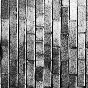 일반영상Known 미달 | Adaptive Pyramid 후보 | 660 nm0.5707 rad · 2.795% 660 nm1.622785 rad · 37.800% Full GD100 + Spectral Periodic L-BFGS100 · 미달 | 660 nm1.622785 rad · 37.800% Full GD100 + Spectral Periodic L-BFGS100 · 미달 | Coarse 오파장 660 → 610 nm Δλ 50 nm · 최종 위상 미검증 |
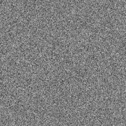 일반영상Known 미달 | Adaptive Pyramid 후보 | 660 nm1.2973 rad · 1.899% 660 nm1.322698 rad · 1.961% Full GD100 + Spectral Periodic L-BFGS100 · 미달 | 660 nm1.322698 rad · 1.961% Full GD100 + Spectral Periodic L-BFGS100 · 미달 | Coarse 오파장 660 → 570 nm Δλ 90 nm · 최종 위상 미검증 |
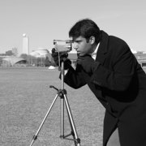 Cameraman 변형Known 성공 | Adaptive Pyramid 후보 | 450 nm0.0810 rad · 1.505% | 최신 Adaptive 별도 미확인 | 전체 격자 Blind 기록 미확인 |
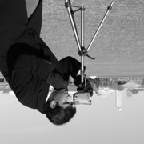 Cameraman 변형Known 성공 | Adaptive Pyramid 후보 | 500 nm0.0856 rad · 1.201% | 최신 Adaptive 별도 미확인 | 전체 격자 Blind 기록 미확인 |
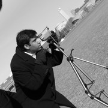 Cameraman 변형Known 성공 | Adaptive Pyramid 후보 | 600 nm0.0845 rad · 1.060% 650 nm0.0919 rad · 0.899% | 최신 Adaptive 별도 미확인 | 전체 격자 Blind 기록 미확인 |
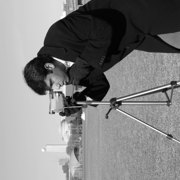 Cameraman 변형Known 성공 | Adaptive Pyramid 후보 | 550 nm0.0891 rad · 1.239% 650 nm0.1375 rad · 1.200% | 최신 Adaptive 별도 미확인 | 전체 격자 Blind 기록 미확인 |
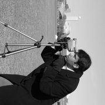 Cameraman 변형Known 성공 | Adaptive Pyramid 후보 | 450 nm0.0613 rad · 1.133% | 최신 Adaptive 별도 미확인 | 전체 격자 Blind 기록 미확인 |
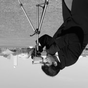 Cameraman 변형Known 성공 | Adaptive Pyramid 후보 | 610 nm0.1148 rad · 1.237% 640 nm1.2677 rad · 35.080% | 최신 Adaptive 별도 미확인 | Unknown 위상 미달 610 → 610 nm GD200 RMSE 0.166049 · L2 2.078%별도 전체 격자 검증 센서 · 이전 GD10 이력 보존 |
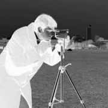 Cameraman 변형Known 성공 | Adaptive Pyramid 후보 | 610 nm1.1079 rad · 46.560% 640 nm0.1365 rad · 1.227% | 최신 Adaptive 별도 미확인 | Unknown 위상 미달 640 → 640 nm GD200 RMSE 0.569171 · L2 13.468%별도 전체 격자 검증 센서 · 이전 GD10 이력 보존 |
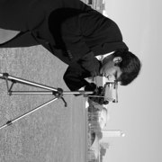 Cameraman 변형Known 통과 | Adaptive Pyramid 후보 | Known 수치 미확인 550 nm0.091507 rad · 1.244% Pyramid64 GD150 + L-BFGS150 · 통과 | 550 nm0.091507 rad · 1.244% Pyramid64 GD150 + L-BFGS150 · 통과 | 전체 격자 Blind 기록 미확인 |
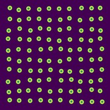 적혈구 물리 모델Known 성공 | Spectral Periodic GD100+LBFGS100 | 660 nm ROI 0.047274 rad · 0.308% 100/100 · Known · 역사적 양수 제한상세에서 실험 전체 이력 확인 | 과거 660 nm 성공 100/100; 최신 0~2π Spectral Periodic 별도 미확인. | 전체 격자 Blind 기록 미확인 |
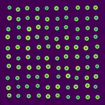 적혈구 물리 모델Known 성공 | Spectral Periodic GD100+LBFGS100 | 660 nm ROI 0.045942 rad · 0.307% 100/100 · Known · 역사적 양수 제한상세에서 실험 전체 이력 확인 | 과거 660 nm 성공 100/100; 최신 0~2π Spectral Periodic 별도 미확인. | 전체 격자 Blind 기록 미확인 |
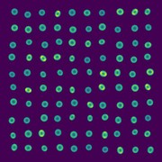 적혈구 물리 모델Known 성공 | Spectral Periodic GD100+LBFGS100 | 660 nm ROI 0.048999 rad · 0.308% 100/100 · Known · 역사적 양수 제한상세에서 실험 전체 이력 확인 | 과거 660 nm 성공 100/100; 최신 0~2π Spectral Periodic 별도 미확인. | 전체 격자 Blind 기록 미확인 |
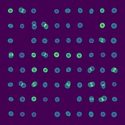 적혈구 물리 모델Known 성공 (과거 별도 조건) | Spectral Periodic GD100+LBFGS100 | 660 nm ROI 0.065320 rad · 0.314% 75/75 · Known · 역사적 signed + unwrap상세에서 실험 전체 이력 확인 | 역사적 signed + unwrap 75/75 성공; 현재 제한을 충족하는 독립 최종값 미확인. | 전체 격자 Blind 기록 미확인 |
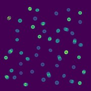 적혈구 물리 모델Known 부분 통과 | Spectral Periodic GD100+LBFGS100 | 660 nm ROI 0.077086 rad · 0.442% 49/50 · Known · full B17상세에서 실험 전체 이력 확인660 nm0.029799 rad · 0.439% Full GD100 + Spectral Periodic L-BFGS100 · 부분 통과ROI 0.080064 rad · 49/50 | 660 nm0.029799 rad · 0.439% Full GD100 + Spectral Periodic L-BFGS100 · 부분 통과ROI 0.080064 rad · 49/50 | 전체 격자 Blind 기록 미확인 |
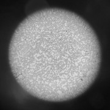 적혈구 현미경 사진Known 성공 | Pyramid64 + Weak Circular 후보 | 440 nm 0.020424 rad · 0.472% 660 nm 0.116878 rad · 0.619% 상세에서 실험 전체 이력 확인 | 과거 Known 성공: 440 nm 통과; 660 nm 통과. 최신 단일 추천 Blind 통합은 미확인. | 전체 격자 Blind 기록 미확인 |
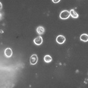 적혈구 현미경 사진Known 성공 | Pyramid64 + Weak Circular 후보 | 440 nm 0.019425 rad · 0.543% 660 nm 0.039259 rad · 0.296% 상세에서 실험 전체 이력 확인 | 과거 Known 성공: 440 nm 통과; 660 nm 통과. 최신 단일 추천 Blind 통합은 미확인. | 전체 격자 Blind 기록 미확인 |
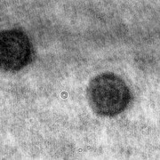 적혈구 현미경 사진Known 혼재 | Pyramid64 + Weak Circular 후보 | 440 nm 0.048140 rad · 0.783% 660 nm 0.273860 rad · 0.795% 상세에서 실험 전체 이력 확인 | 과거 Known 성공: 440 nm 통과; 660 nm 미달. 최신 단일 추천 Blind 통합은 미확인. | 전체 격자 Blind 기록 미확인 |
결과 이미지
선택한 이미지 및 파장 조건의 저장된 실험 그림입니다.